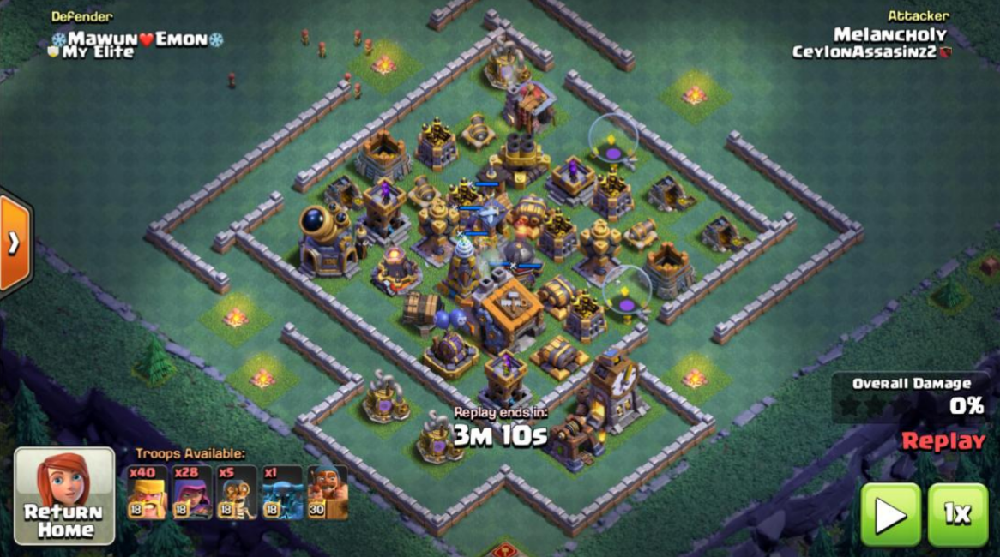
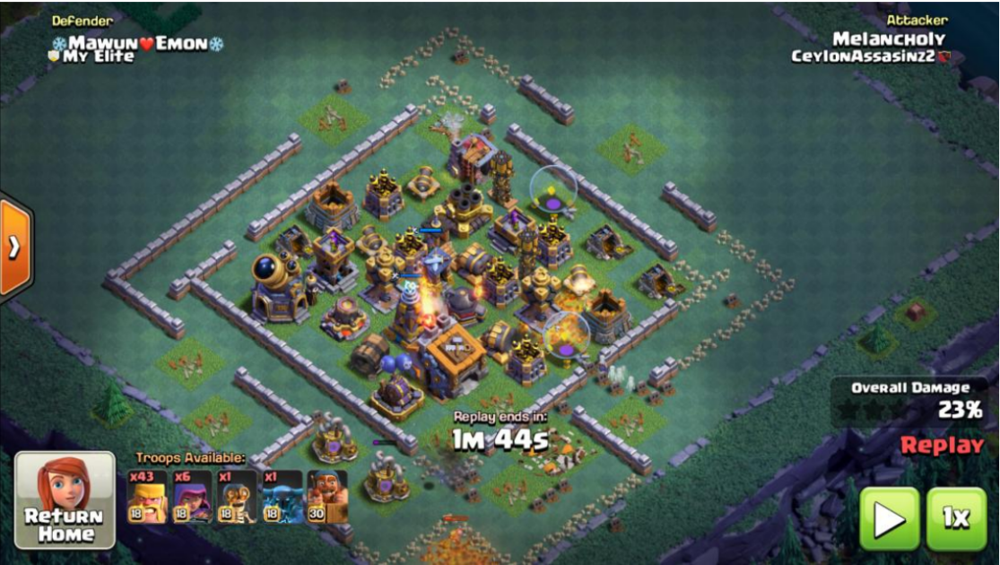
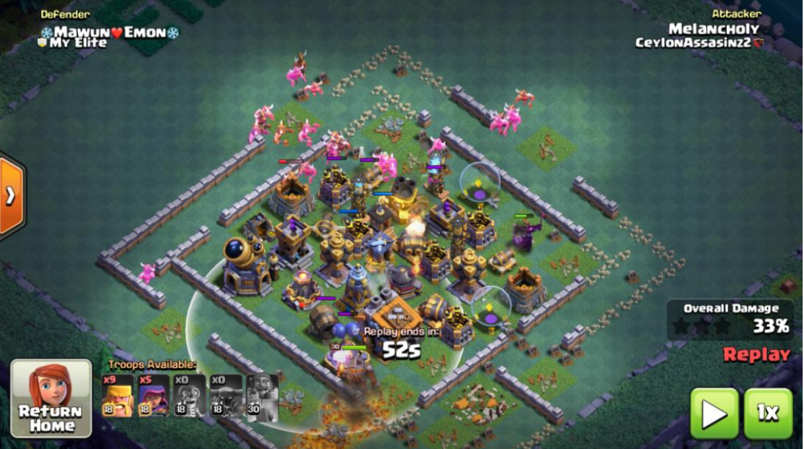
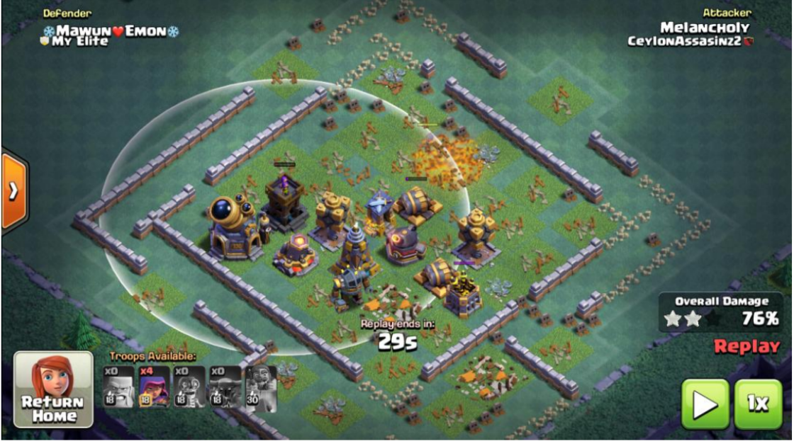
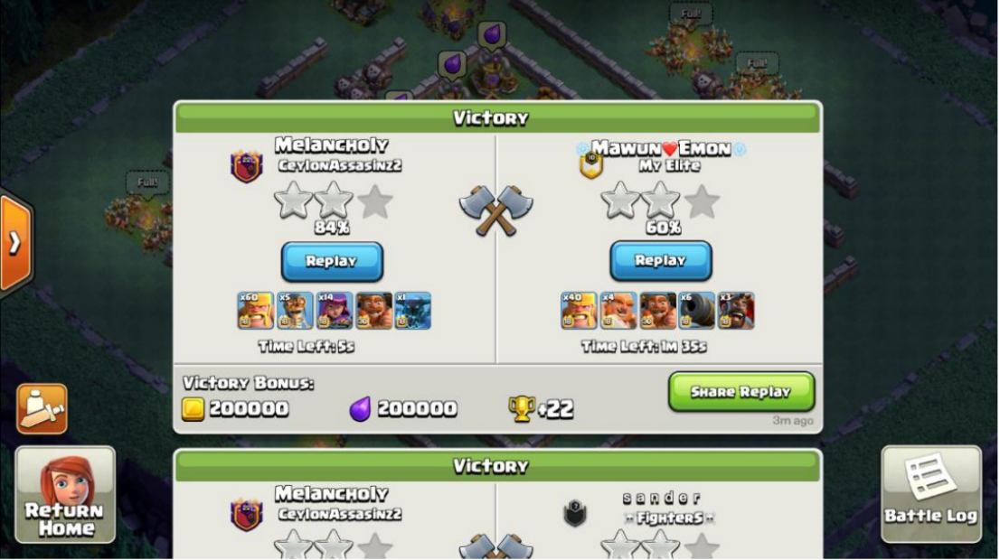

Back to Main Page
Back to Type 2

Solution 1: 2barb/2arch/1bomber/1pekka | safe 74+
1)wallbreak
2)kill some gp
3)bm distracts gc, pekka distracts mortar, roaster is too far away to do anything
4)use last archers to secure bh or chip buildings
   